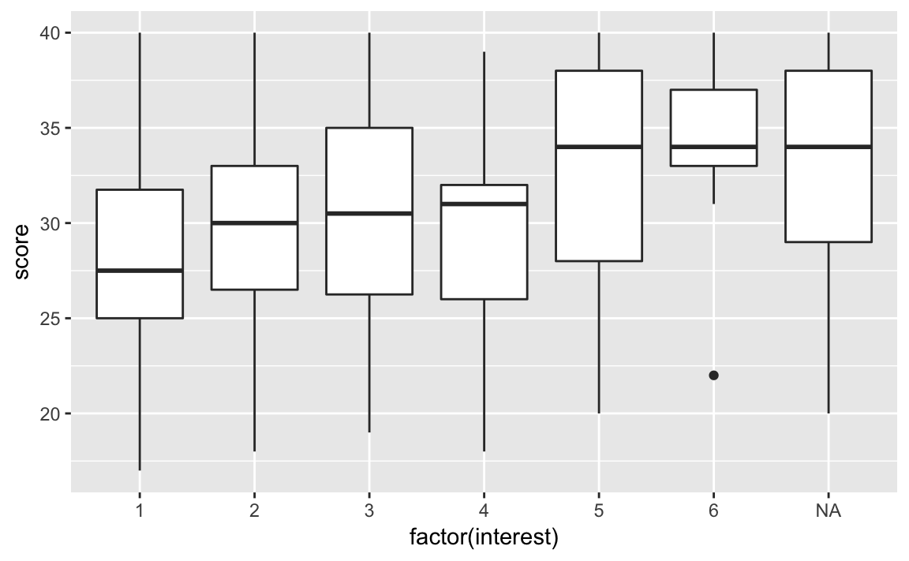
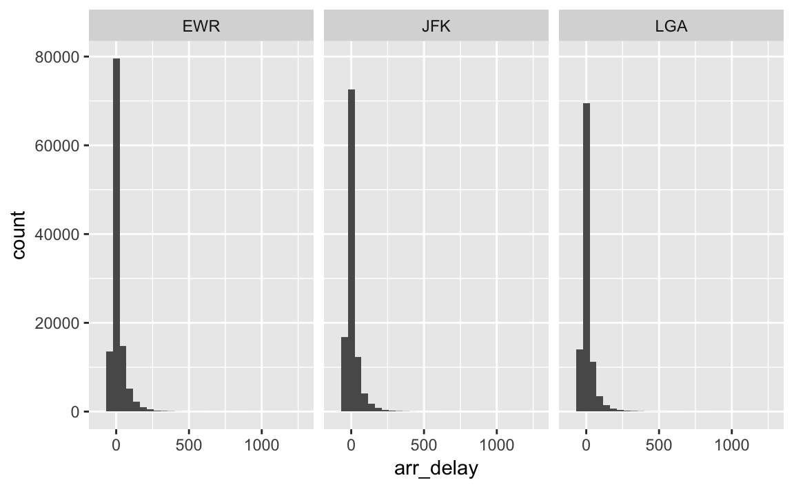

Kapitel 7 Daten visualisieren
Lernziele:
- An einem Beispiel erläutern können, warum/ wann ein Bild mehr sagt, als 1000 Worte.
- Häufige Arten von Diagrammen erstellen können.
- Diagramme bestimmten Zwecken zuordnen können.
In diesem Kapitel werden folgende Pakete benötigt::
library(tidyverse) # Zum Plotten
library(car) # Umkodieren
library(knitr) # HTML-TabellenDieses Kapitel erläutert das Daten visualisieren anhand des R-Pakets ggplot2.
7.1 Ein Bild sagt mehr als 1000 Worte
Ein Bild sagt bekanntlich mehr als 1000 Worte. Schauen wir uns zur Verdeutlichung das berühmte Beispiel von Anscombe33 an. Es geht hier um vier Datensätze mit zwei Variablen (Spalten; X und Y). Offenbar sind die Datensätze praktisch identisch: Alle X haben den gleichen Mittelwert und die gleiche Varianz; dasselbe gilt für die Y. Die Korrelation zwischen X und Y ist in allen vier Datensätzen gleich. Allerdings erzählt eine Visualisierung der vier Datensätze eine ganz andere Geschichte.
Abbildung 7.1: Das Anscombe-Quartett
Offenbar “passieren” in den vier Datensätzen gänzlich unterschiedliche Dinge. Dies haben die Statistiken nicht aufgedeckt; erst die Visualisierung erhellte uns… Kurz: Die Visualisierung ist ein unverzichtbares Werkzeug, um zu verstehen, was in einem Datensatz (und damit in der zugrunde liegenden “Natur”) passiert.
Es gibt viele Möglichkeiten, Daten zu visualisieren (in R). Wir werden uns hier auf einen Weg bzw. ein Paket konzentrieren, der komfortabel, aber mächtig ist und gut zum Prinzip des Durchpfeifens passt: ggplot234.
Laden wir dazu den Datensatz nycflights::flights.
data(flights, package = "nycflights13")qplot(x = carrier, y = arr_delay, geom = "boxplot", data = flights)
Schauen wir uns den Befehl qplot etwas näher an. Wie ist er aufgebaut?
qplot: Erstelle schnell (q wie quick in qplot) mal einen Plot (engl. “plot”: Diagramm).
x: Der X-Achse soll die Variable “carrier” zugeordnet werden.
y: Der Y-Achse soll die Variable “arr_dely” zugeorndet werden.
geom: (“geometriches Objekt”) Gemalt werden soll ein Boxplot, nicht etwa Punkte, Linien oder sonstiges.
data: Als Datensatz bitte flights verwenden.
Offenbar gibt es viele Extremwerte, was die Verspätung betrifft. Das erscheint mir nicht unplausibel (Schneesturm im Winter, Flugzeug verschwunden…). Vor dem Hintergrund der Extremwerte erscheinen die mittleren Verspätungen (Mediane) in den Boxplots als ähnlich. Vielleicht ist der Unterschied zwischen den Monaten ausgeprägter?
qplot(x = factor(month), y = arr_delay, geom = "boxplot", data = flights)
Kaum Unterschied; das spricht gegen die Schneesturm-Idee als Grund für Verspätung. Aber schauen wir uns zuerst die Syntax von qplot näher an. “q” in qplot steht für “quick”. Tatsächlich hat qplot einen großen Bruder, ggplot35, der deutlich mehr Funktionen aufweist - und daher auch die umfangreichere (=komplexere) Syntax. Fangen wir mit qplot an.
Diese Syntax des letzten Beispiels ist recht einfach, nämlich:
qplot (x = X_Achse, y = Y_Achse, data = mein_dataframe, geom = "ein_geom")Wir definieren mit x, welche Variable der X-Achse des Diagramms zugewiesen werden soll, z.B. month; analog mit Y-Achse. Mit data sagen wir, in welchem Dataframe die Spalten “wohnen” und als “geom” ist die Art des statistischen “geometrischen Objects” gemeint, also Punkte, Linien, Boxplots, Balken…
7.2 Häufige Arten von Diagrammen
Unter den vielen Arten von Diagrammen und vielen Arten, diese zu klassifizieren greifen wir uns ein paar häufige Diagramme heraus und schauen uns diese der Reihe nach an.
7.2.1 Eine kontinuierliche Variable
Schauen wir uns die Verteilung der Schuhgrößen von Studierenden an.
wo_men <- read.csv("data/wo_men.csv")
qplot(x = shoe_size, data = wo_men)
Weisen wir nur der X-Achse (aber nicht der Y-Achse) eine kontinuierliche Variable zu, so wählt ggplot2 automatisch als Geom automatisch ein Histogramm; wir müssen daher nicht explizieren, dass wir ein Histogramm als Geom wünschen (aber wir könnten es hinzufügen). Alternativ wäre ein Dichtediagramm hier von Interesse:
# qplot(x = shoe_size, data = wo_men) wie oben
qplot(x = shoe_size, data = wo_men, geom = "density")
Was man sich merken muss, ist, dass hier nur das Geom mit Anführungsstrichen zu benennen ist, die übrigen Parameter ohne.
Vielleicht wäre es noch schön, beide Geome zu kombinieren in einem Diagramm. Das ist etwas komplizierter; wir müssen zum großen Bruder ggplot umsteigen, da qplot nicht diese Funktionen anbietet.
ggplot(data = wo_men) +
aes(x = shoe_size) +
geom_histogram(aes(y = ..density..), alpha = .7) +
geom_density(color = "blue")
Zuerst haben wir mit dem Parameter data den Dataframe benannt. aes definiert, welche Variablen welchen Achsen (oder auch z.B. Füllfarben) zugewiesen werden. Hier sagen wir, dass die Schuhgröße auf X-Achse stehen soll. Das +-Zeichen trennt die einzelnen Bestandteile des ggplot-Aufrufs voneinander. Als nächstes sagen wir, dass wir gerne ein Histogram hätten: geom_histogram. Dabei soll aber nicht wie gewöhnlich auf der X-Achse die Häufigkeit stehen, sondern die Dichte. ggplot berechnet selbständig die Dichte und nennt diese Variable ..density..; die vielen Punkte sollen wohl klar machen, dass es sich nicht um eine “normale” Variable aus dem eigenen Datenframe handelt, sondern um eine “interne” Variable von ggplot - die wir aber nichtsdestotrotz verwenden können. alpha bestimmt die “Durchsichtigkeit” eines Geoms; spielen Sie mal etwas damit herum. Schließlich malen wir noch ein blaues Dichtediagramm über das Histogramm.
Wünsche sind ein Fass ohne Boden… Wäre es nicht schön, ein Diagramm für Männer und eines für Frauen zu haben, um die Verteilungen vergleichen zu können?
qplot(x = shoe_size, data = wo_men, geom = "density", color = sex)
qplot(x = shoe_size, data = wo_men, geom = "density", fill = sex, alpha = I(.7))

Hier sollten vielleicht noch die Extremwerte entfernt werden, um den Blick auf das Gros der Werte nicht zu verstellen:
wo_men %>%
filter(shoe_size <= 47) -> wo_men2
qplot(x = shoe_size, data = wo_men2, geom = "density", fill = sex, alpha = I(.7))
Besser. Man kann das Durchpfeifen auch bis zu qplot weiterführen:
wo_men %>%
filter(shoe_size <= 47) %>%
qplot(x = shoe_size, data = ., geom = "density", fill = sex, alpha = I(.7))
Die Pfeife versucht im Standard, das Endprodukt des letzten Arbeitsschritts an den ersten Parameter des nächsten Befehls weiterzugeben. Ein kurzer Blick in die Hilfe von qplot zeigt, dass der erste Parameter nicht data ist, sondern x. Daher müssen wir explizit sagen, an welchen Parameter wir das Endprodukt des letzen Arbeitsschritts geben wollen. Netterweise müssen wir dafür nicht viel tippen: Mit einem schlichten Punkt . können wir sagen “nimm den Dataframe, so wie er vom letzten Arbeitsschritt ausgegeben wurde”.
Mit fill = sex sagen wir qplot, dass er für Männer und Frauen jeweils ein Dichtediagramm erzeugen soll; jedem Dichtediagramm wird dabei eine Farbe zugewiesen (die uns ggplot2 im Standard voraussucht). Mit anderen Worten: Die Werte von sex werden der Füllfarbe der Histogramme zugeordnet. Anstelle der Füllfarbe hätten wir auch die Linienfarbe verwenden können; die Syntax wäre dann: color = sex.
7.2.2 Zwei kontinuierliche Variablen
Ein Streudiagramm ist die klassische Art, zwei metrische Variablen darzustellen. Das ist mit qplot einfach:
qplot(x = height, y = shoe_size, data = wo_men)
Wir weisen wieder der X-Achse und der Y-Achse eine Variable zu; handelt es sich in beiden Fällen um Zahlen, so wählt ggplot2 automatisch ein Streudiagramm - d.h. Punkte als Geom (geom = "point"). Wir sollten aber noch die Extremwerte herausnehmen:
wo_men %>%
filter(height > 150, height < 210, shoe_size < 55) %>%
qplot(x = height, y = shoe_size, data = .)
Der Trend ist deutlich erkennbar: Je größer die Person, desto länger die Füß´. Zeichnen wir noch eine Trendgerade ein.
wo_men %>%
filter(height > 150, height < 210, shoe_size < 55) %>%
qplot(x = height, y = shoe_size, data = .) +
geom_smooth(method = "lm")
Synonym könnten wir auch schreiben:
wo_men %>%
filter(height > 150, height < 210, shoe_size < 55) %>%
ggplot() +
aes(x = height, y = shoe_size) +
geom_point() +
geom_smooth(method = "lm")Da ggplot als ersten Parameter die Daten erwartet, kann die Pfeife hier problemlos durchgereicht werden. Innerhalb eines ggplot-Aufrufs werden die einzelne Teile durch ein Pluszeichen + voneinander getrennt. Nachdem wir den Dataframe benannt haben, definieren wir die Zuweisung der Variablen zu den Achsen mit aes (“aes” wie “aesthetics”, also das “Sichtbare” eines Diagramms, die Achsen etc., werden definiert). Ein “Smooth-Geom” ist eine Linie, die sich schön an die Punkte anschmiegt, in diesem Falls als Gerade (lineares Modell, lm).
Bei sehr großen Datensätze, sind Punkte unpraktisch, da sie sich überdecken (“overplotting”). Ein Abhilfe ist es, die Punkte nur “schwach” zu färben. Dazu stellt man die “Füllstärke” der Punkte über alpha ein: geom_point(alpha = 1/100). Um einen passablen Alpha-Wert zu finden, bedarf es häufig etwas Probierens. Zu beachten ist, dass es mitunter recht lange dauert, wenn ggplot viele (>100.000) Punkte malen soll.
Bei noch größeren Datenmengen bietet sich an, den Scatterplot als “Schachbrett” aufzufassen, und das Raster einzufärben, je nach Anzahl der Punkte pro Schachfeld; zwei Geome dafür sind geom_hex() und geom_bin2d().
data(flights, package = "nycflights13")
nrow(flights) # groß!
#> [1] 336776
ggplot(flights) +
aes(x = distance, y = air_time) +
geom_hex()
Wenn man dies verdaut hat, wächst der Hunger nach einer Aufteilung in Gruppen.
wo_men %>%
filter(height > 150, height < 210, shoe_size < 55) -> wo_men2
wo_men2 %>%
qplot(x = height, y = shoe_size, color = sex, data = .)
Mit color = sex sagen wir, dass die Linienfarbe (der Punkte) entsprechend der Stufen von sex eingefärbt werden sollen. Die genaue Farbwahl übernimmt ggplot2 für uns.
Alternativ kann man auch zwei “Teil-Bildchen” (“facets”) erstellen, eines für Frauen und eines für Männer:
wo_men %>%
filter(height > 150, height < 210, shoe_size < 55) %>%
qplot(x = height, y = shoe_size, facets = "~sex", color = sex, data = .)
Man beachte die Tilde ~, die vor die “Gruppierungsvariable” sex zu setzen ist.
7.2.2.1 Vertiefung zu Facetten
Ein netter visueller Effekt wird erreicht, wenn in jeder Facette zwar alle Punkte gezeigt werden in einem leichten Grau. Aber farbig betont werden nur die Punkte, die zur jeweiligen Gruppe gehören. Der optische Eindruck erklärt es einfacher als Worte:
wo_men %>%
filter(height > 150, height < 210, shoe_size < 55) %>%
select(-sex) -> wo_men4
wo_men4 %>%
ggplot(aes(x = height, y = shoe_size)) +
geom_point(color = "grey80") +
facet_wrap(~sex) +
geom_point(data = wo_men2, aes(color = sex))

Der “ggplot-Trick” ist, zuerst die Punkte ohne Gruppierungsinformation (hier: sex) zu plotten. Danach plotten wir die nach Gruppenzugehörigkeit gefärbten Punkte.
7.2.3 Eine diskrete Variable
Bei diskreten Variablen, vor allem nominalen Variablen, geht es in der Regel darum, Häufigkeiten auszuzählen. Wie viele Männer und Frauen sind in dem Datensatz?
qplot(x = sex, data = wo_men)
Falls nur die X-Achse definiert ist und dort eine Faktorvariable oder eine Text-Variable steht, dann nimmt qplot automatisch ein Balkendiagramm als Geom.
Entfernen wir vorher noch die fehlenden Werte:
wo_men %>%
na.omit() %>%
qplot(x = sex, data = .)
Wir könnten uns jetzt die Frage stellen, wie viele kleine und viele große Menschen es bei Frauen und bei den Männern gibt. Dazu müssen wir zuerst eine Variable wie “Größe gruppiert” erstellen mit zwei Werten: “klein” und “groß”. Nennen wir sie groesse_gruppe
wo_men$groesse_gruppe <- car::recode(wo_men$height, "lo:175 = 'klein'; else = 'gross'")
wo_men %>%
filter(height > 150, height < 210, shoe_size < 55) %>%
na.omit -> wo_men2
qplot(x = sex, fill = groesse_gruppe, data = wo_men2)
In Worten sagt der recode-Befehl hier in etwa: “Kodiere wo_men$height um, und zwar vom kleinsten (lo) Wert bis 170 soll den Wert klein bekommen, ansonsten bekommt eine Größe den Wert gross”.
Hier haben wir qplot gesagt, dass der die Balken entsprechend der Häufigkeit von groesse_gruppe füllen soll. Und bei den Frauen sind bei dieser Variablen die Werte klein häufig; bei den Männern hingegen die Werte gross.
Schön wäre noch, wenn die Balken Prozentwerte angeben würden. Das geht mit qplot (so) nicht; wir schwenken auf ggplot um36.
wo_men2 %>%
ggplot() +
aes(x = sex, fill = groesse_gruppe) +
geom_bar(position = "fill")
Schauen wir uns die Struktur des Befehls ggplot näher an.
wo_men2: Hey R, nimm den Datensatz wo_men2 UND DANN…
ggpplot() : Hey R, male ein Diagramm von Typ ggplot (mit dem Datensatz aus dem vorherigen Pfeifen-Schritt, d.h. aus der vorherigen Zeile, also wo_men2)!
+: Das Pluszeichen grenzt die Teile eines ggplot-Befehls voneinander ab.
aes: von “aethetics”, also welche Variablen des Datensatzes den sichtbaren Aspekten (v.a. Achsen, Farben) zugeordnet werden.
x: Der X-Achse (Achtung, x wird klein geschrieben hier) wird die Variable sex zugeordnet.
y: gibt es nicht??? Wenn in einem ggplot-Diagramm keine Y-Achse definiert wird, wird ggplot automatisch ein Histogramm bzw. ein Balkendiagramm erstellen. Bei diesen Arten von Diagrammen steht auf der Y-Achse keine eigene Variable, sondern meist die Häufigkeit des entsprechenden X-Werts (oder eine Funktion der Häufigkeit, wie relative Häufigkeit).
fill Das Diagramm (die Balken) sollen so gefüllt werden, dass sich die Häufigkeit der Werte von groesse_gruppe darin widerspiegelt.
geom_XYZ: Als “Geom” soll ein Balken (“bar”) gezeichnet werden. Ein Geom ist in ggplot2 das zu zeichnende Objekt, also ein Boxplot, ein Balken, Punkte, Linien etc. Entsprechend wird gewünschte Geom mit geom_bar, geom_boxplot, geom_point` etc. gewählt.
position = fill: position_fill will sagen, dass die Balken alls eine Höhe von 100% (1) haben. Die Balken zeigen also nur die Anteile der Werte der fill-Variablen.
Die einzige Änderung in den Parametern ist position = "fill". Dieser Parameter weist ggplot an, die Positionierung der Balken auf die Darstellung von Anteilen auszulegen. Damit haben alle Balken die gleiche Höhe, nämlich 100% (1). Aber die “Füllung” der Balken schwankt je nach der Häufigkeit der Werte von groesse_gruppe pro Balken (d.h. pro Wert von sex).
Wir sehen, dass die Anteile von großen bzw. kleinen Menschen bei den beiden Gruppen (Frauen vs. Männer) unterschiedlich hoch ist. Dies spricht für einen Zusammenhang der beiden Variablen; man sagt, die Variablen sind abhängig (im statistischen Sinne).
Je unterschiedlicher die “Füllhöhe”, desto stärker sind die Variablen (X-Achse vs. Füllfarbe) voneinander abhängig (bzw. desto stärker der Zusammenhang).
7.2.4 Zwei diskrete Variablen
Arbeitet man mit nominalen Variablen, so sind Kontingenztabellen Täglich Brot. Z.B.: Welche Produkte wurden wie häufig an welchem Standort verkauft? Wie ist die Verteilung von Alkoholkonsum und Körperform bei Menschen einer Single-Börse. Bleiben wir bei letztem Beispiel.
data(profiles, package = "okcupiddata")
profiles %>%
count(drinks, body_type) %>%
ggplot +
aes(x = drinks, y = body_type, fill = n) +
geom_tile() +
theme(axis.text.x = element_text(angle = 90))
Was haben wir gemacht? Also:
Nehme den Datensatz “profiles” UND DANN
Zähle die Kombinationen von “drinks” und “body_type” UND DANN
Erstelle ein ggplot-Plot UND DANN
Weise der X-Achse “drinks” zu, der Y-Achse “body_type” und der Füllfarbe “n” UND DANN
Male Fliesen UND DANN
Passe das Thema so an, dass der Winkel für Text der X-Achse auf 90 Grad steht.
Was sofort ins Auge sticht, ist dass “soziales Trinken”, nennen wir es mal so, am häufigsten ist, unabhängig von der Körperform. Ansonsten scheinen die Zusammenhäng nicht sehr stark zu sein.
7.2.5 Zusammenfassungen zeigen
Manchmal möchten wir nicht die Rohwerte einer Variablen darstellen, sondern z.B. die Mittelwerte pro Gruppe. Mittelwerte sind eine bestimmte Zusammenfassung einer Spalte; also fassen wir zuerst die Körpergröße zum Mittelwert zusammen - gruppiert nach Geschlecht.
wo_men2 %>%
group_by(sex) %>%
summarise(Groesse_MW = mean(height)) -> wo_men3
wo_men3
#> # A tibble: 2 × 2
#> sex Groesse_MW
#> <fctr> <dbl>
#> 1 man 183
#> 2 woman 167Diese Tabelle schieben wir jetzt in ggplot2; natürlich hätten wir das gleich in einem Rutsch durchpfeifen können.
wo_men3 %>%
qplot(x = sex, y = Groesse_MW, data = .)
Das Diagramm besticht nicht durch die Tiefe und Detaillierung. Wenn wir noch zusätzlich die Mittelwerte nach Groesse_Gruppe ausweisen, wird das noch überschaubar bleiben.
wo_men2 %>%
group_by(sex, groesse_gruppe) %>%
summarise(Groesse_MW = mean(height)) %>%
qplot(x = sex, color = factor(groesse_gruppe), y = Groesse_MW, data = .)
7.3 Aufgaben
Erzählen Sie einer vertrauenswürdigen Person jeweils eine “Geschichte”, die das Zustandekommen der vier Plots von Anscombe (Abb. 7.1) erklärt!
Abb. ?? stellt die mittlere Verspätung verschiedener Fluggesellschaften dar; als “Geom” wird ein Boxplot verwendet. Andere Geome wären auch möglich - aber wie sinnvoll wären sie?
Erstellen Sie ein Diagramm, welches Histogramme der Verspätung verwendet anstelle von Boxplots! Damit das Diagramm nicht so groß wird, nehmen Sie zur Gruppierung nicht carrier sondern origin.
Ist das Histogramm genauso erfolgreich wie der Boxplot, wenn es darum geht, viele Verteilungen vergleichend zu präsentieren? Warum?
Erstellen Sie ein sehr grobes und ein sehr feines Histogramm für die Schuhgröße!
Vertiefung: Erstellen Sie ein Diagramm, das sowohl eine Zusammenfassung (Mittelwert) der Körpergrößen nach Geschlecht darstellt als auch die einzelnen Werte darstellt!
7.4 Lösungen
:-)
:
qplot(x = arr_delay, geom = "histogram", data = flights, facets = "~origin")
Der Boxplot ist besser geeignet, um mehrere Verteilungen vergleichend zu präsentieren. Durch die gleiche Ausrichtung der Boxplots ist es dem Auge viel einfacher, Vergleiche anzustellen im Vergleich zu den Histogrammen. Einen optisch schönenen Effekt könnte man mit geom_jitter anstelle von geom_pointerreichen. Auch die Reihenfolge der beiden Geome könnte man umdrehen. Natürlich ist auch an Form, Größe und Farbe der Geome noch zu feilen.
- :
qplot(x = shoe_size, data = wo_men, bins = 10)
qplot(x = shoe_size, data = wo_men, bins = 50)

- :
wo_men2 %>%
group_by(sex) %>%
summarise(height = mean(height)) -> wo_men3
wo_men3 %>%
ggplot() +
aes(x = sex, y = height) +
geom_point(color = "red", size = 8) +
geom_point(data = wo_men2, color = "grey80")
Der “Trick” ist hier, erst die zusammengefassten Daten in ein Geom zu stecken (wo_men3). Dann werden die Rohdaten (wo_men2) ebenfalls in ein Geom gepackt. Allerdings muss die Achsen-Beschriftung bei beiden Geomen identisch sein, sonst gibt es eine Fehlermeldung.
7.5 Verweise
Edward Tufte gilt als Grand Seigneur der Datenvisualisierung; er hat mehrere lesenswerte Bücher zu dem Thema geschrieben (Tufte 2001; Tufte 2006; Tufte 1990).
William Cleveland, ein amerikanischer Statistiker ist bekannt für seine grundlegenden, und weithin akzeptierten Ansätze für Diagramme, die die wesentliche Aussage schnörkellos transportieren (Cleveland 1993).
Die (graphische) Auswertung von Umfragedaten basiert häufig auf Likert-Skalen. Ob diese metrisches Niveau aufweisen, darf bezweifelt werden. Hier findet sich einige vertiefenden Überlegungen dazu und zur Frage, wie Likert-Daten ausgewertet werden könnten: https://bookdown.org/Rmadillo/likert/.
Lernziele:
- Mindestens eine bekannte Farbauswahl (Palette) nennen können.
- Farbpaletten bei ggplot2 anwenden können.
- Themen bei ggplot2 ändern können.
Literaturverzeichnis
Tufte, Edward R. 2001. The Visual Display of Quantitative Information. Graphics Press. https://www.amazon.com/Visual-Display-Quantitative-Information/dp/1930824130%3FSubscriptionId%3D0JYN1NVW651KCA56C102%26tag%3Dtechkie-20%26linkCode%3Dxm2%26camp%3D2025%26creative%3D165953%26creativeASIN%3D1930824130.
Tufte, Edward R. 2006. Beautiful Evidence. Graphics Press. https://www.amazon.com/Beautiful-Evidence-Edward-R-Tufte/dp/1930824165%3FSubscriptionId%3D0JYN1NVW651KCA56C102%26tag%3Dtechkie-20%26linkCode%3Dxm2%26camp%3D2025%26creative%3D165953%26creativeASIN%3D1930824165.
Tufte, Edward R. 1990. Envisioning Information. Graphics Press. https://www.amazon.com/Envisioning-Information-Edward-R-Tufte/dp/1930824149%3FSubscriptionId%3D0JYN1NVW651KCA56C102%26tag%3Dtechkie-20%26linkCode%3Dxm2%26camp%3D2025%26creative%3D165953%26creativeASIN%3D1930824149.
Cleveland, William S. 1993. Visualizing Data. Hobart Press. https://www.amazon.com/Visualizing-Data-William-S-Cleveland/dp/0963488406%3FSubscriptionId%3D0JYN1NVW651KCA56C102%26tag%3Dtechkie-20%26linkCode%3Dxm2%26camp%3D2025%26creative%3D165953%26creativeASIN%3D0963488406.
“gg” steht für “grammer of graphics” nach einem Buch von Wilkinson(2006); “plot” steht für “to plot”, also ein Diagramm erstellen (“plotten”); vgl. https://en.wikipedia.org/wiki/Ggplot2↩
Achtung: Nicht
qqplot, nichtggplot2, nichtgplot…↩Cleveland fände diese Idee nicht so gut.↩